The photon's wave in the Light lab: before and after
Pairs travel with the energy (Fleming's Photons Fig. 2), the medium leans with the field, and an optional Fig. 5-1 series layer
Real screens: "before" runs the worktree given as --before (usually the layer below), and "after" runs this one. Click an image to open it at full size. Regenerate with node scripts/compare-screens.mjs --before ../before-light-wave --out docs/ui-previews/25a-light-wave --set light-wave --title 'The photon'\''s wave in the Light lab' --description 'Pairs travel with the energy (Fleming'\''s Photons Fig. 2), the medium leans with the field, and an optional Fig. 5-1 series layer'.
Light · tick 660, orbit: pair 6 at midlife, travelling with the energy front


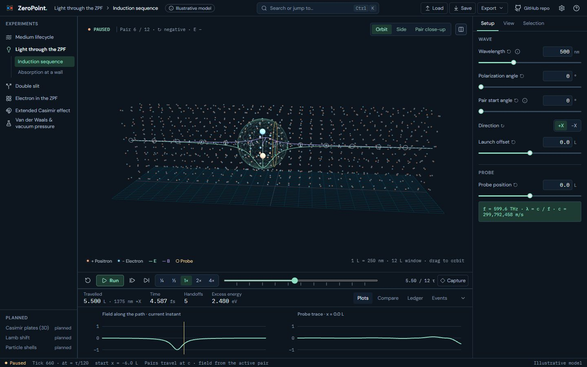
Light · tick 690, side: pair 6 three-quarters through its stretch, closing as it nears the hand-off point


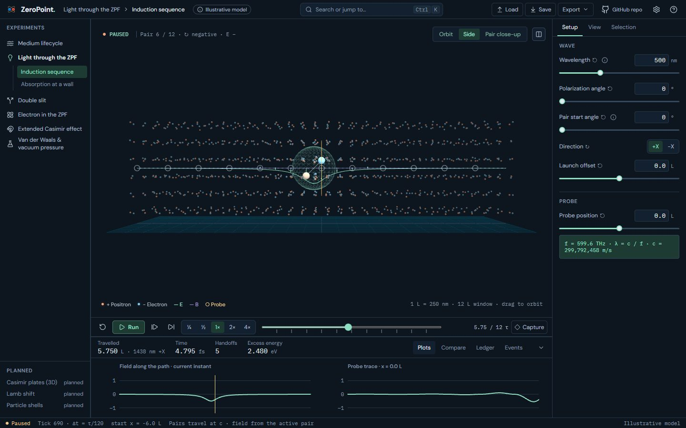
Light · tick 720, side: the hand-off. Pair 6 annihilates and pair 7 is born on the same spot


Light · tick 750, side: pair 7 a quarter through its stretch, its field reversed

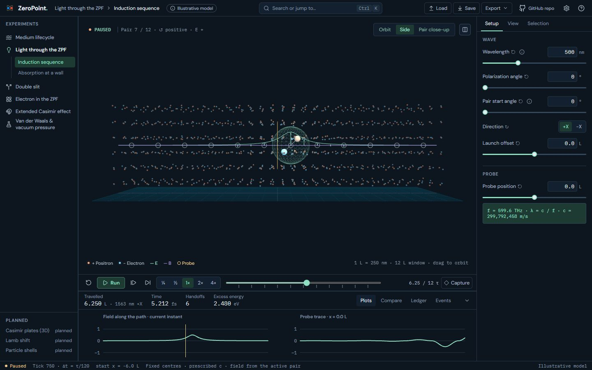

Light · tick 690, pair close-up: the camera follows the travelling pair

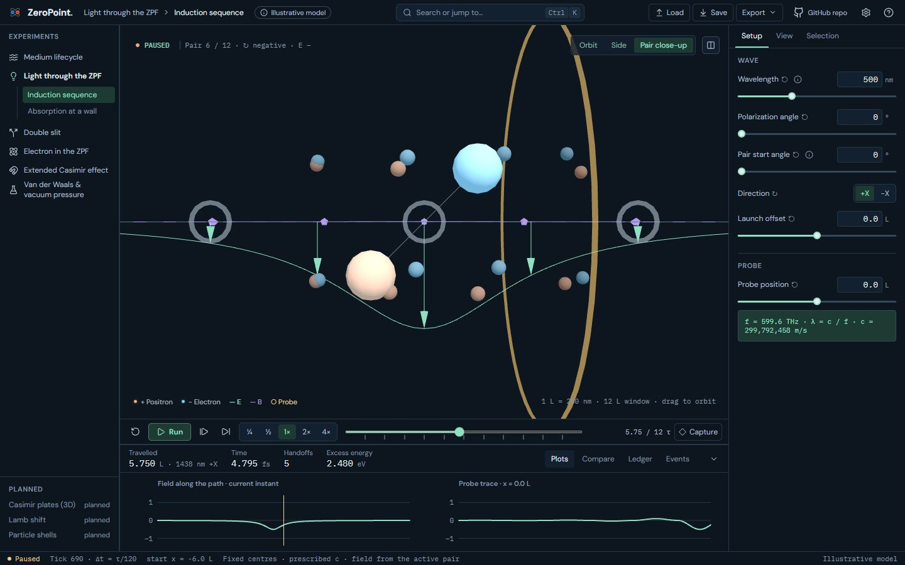

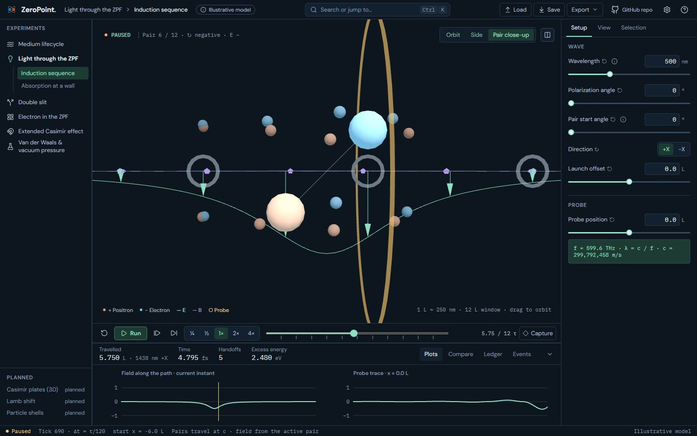
Inspector › Selection: centre now, and where the pair is born and annihilates

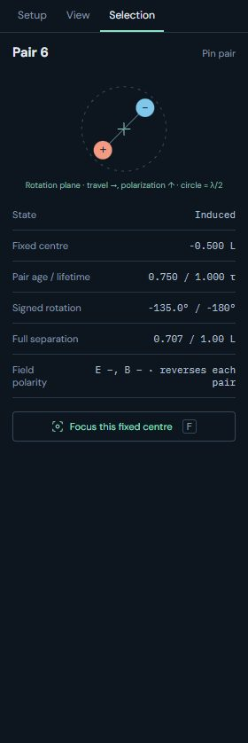

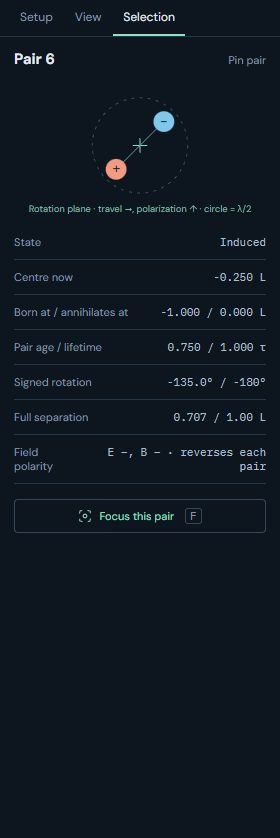
Light · tick 900, side, with View › Photon’s series (Fig. 5-1) turned on: the pairs and alternating fields left behind

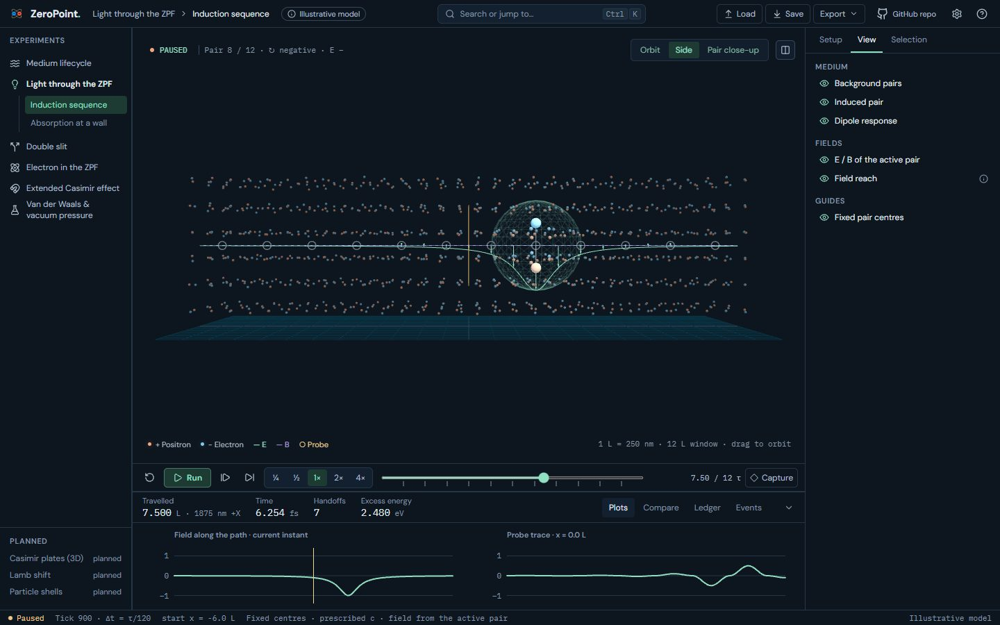

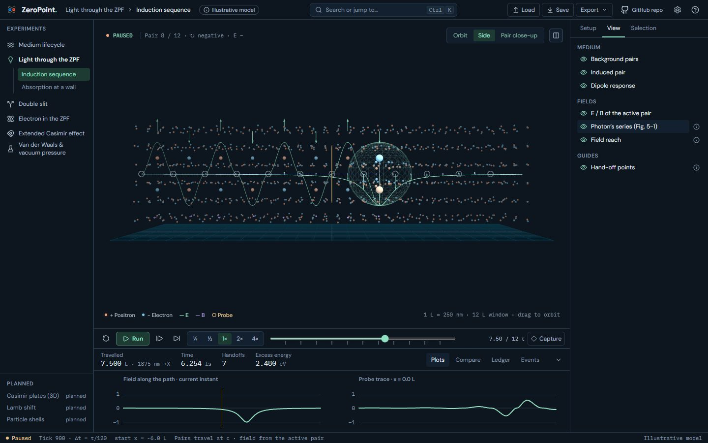
Absorption · tick 1440: the last pair has reached the wall

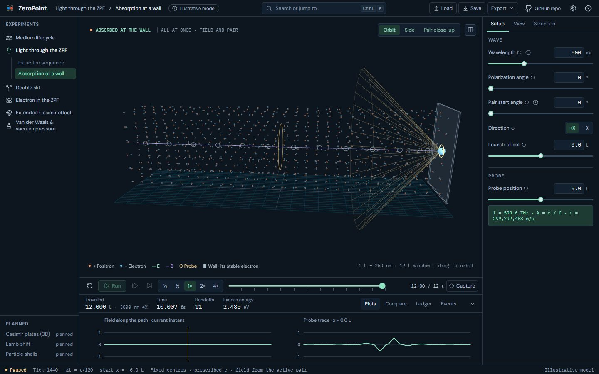

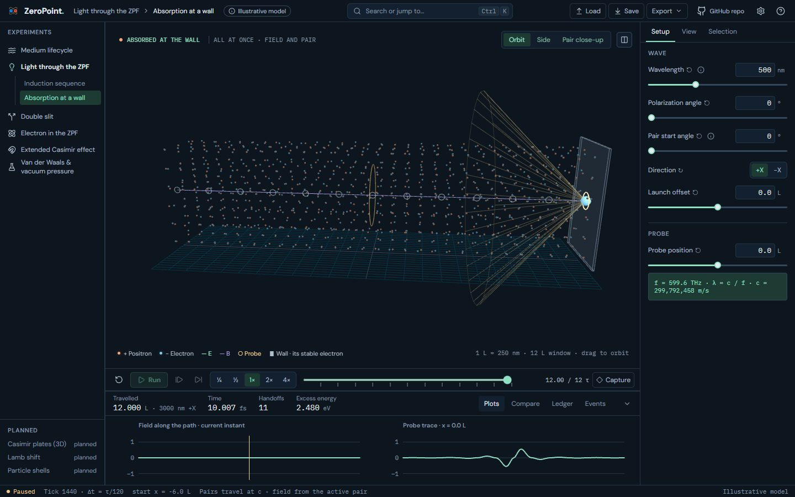
Inspector › View: Photon’s series (off by default) and Hand-off points (was Fixed pair centres)

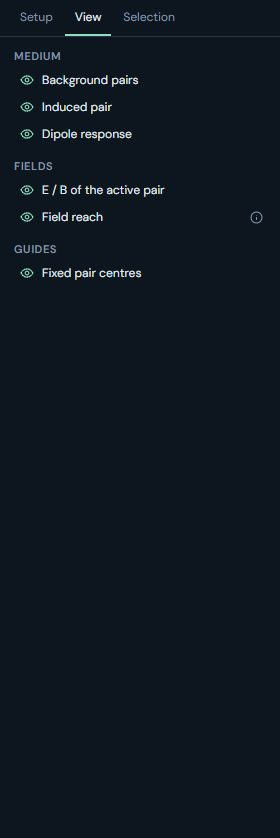

Help › This scenario: pairs that travel, the swaying medium and the series

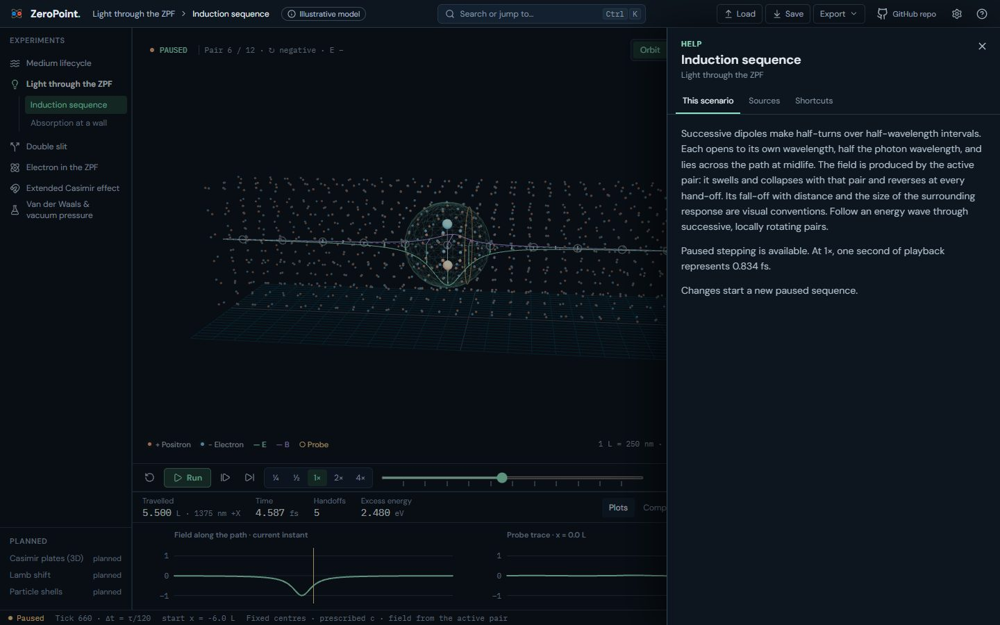